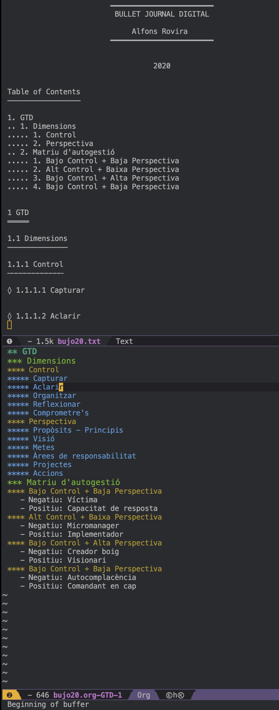

68 Exportar un apartado
Leyendo el blog de uGeek he aprendido a aislar un apartado en un buffer, una ventana, y a imprimirlo posteriormente.
Imaginemos que hemos desarrollado un documento largo:
* Index
* GTD
* Dssing Thingking
Desplegado obtendríamos algo así:
* Index
* GTD
** Dimensions
*** Control
**** Capturar
**** Aclarir
**** Organitzar
**** Reflexionar
**** Comprometre's
*** Perspectiva
**** Propòsits - Principis
**** Visió
**** Metes
**** Àrees de responsabilitat
**** Projectes
**** Accions
** Matriu d'autogestió
*** Bajo Control + Baja Perspectiva
- Negatiu: Víctima
- Positiu: Capacitat de resposta
*** Alt Control + Baixa Perspectiva
- Negatiu: Micromanager
- Positiu: Implementador
*** Bajo Control + Alta Perspectiva
- Negatiu: Creador boig
- Positiu: Visionari
*** Bajo Control + Baja Perspectiva
- Negatiu: Autocomplacència
- Positiu: Comandant en cap
* Dessign Thinking
1. Empatitza
2. Defineix
3. Idea
4. Prototipa
5. Testeja
Si nos situáramos en el apartado * GTD y ejecutáramos los comandos Ctrl-c Ctrl-x b obtendríamos un nuevo buffer, una ventana con el contenido únicament del apartado * GTD.
Ahora que ya tenemos el contenido aislado queremos exportarlo a diferentes formatos, procedemos a exportarlo a:
- Texto Plan txt:
Ctrl-c Ctrl-e t u. Ontendremos un nuevo archivo con el mismo nombre que el archivo original, aunque con la extensión.txt. - PDF:
Ctrl-c Ctrl-e l p. - Markdown:
Crtl-c Ctrl-e M m.

En la parte de abajo se puede ver el buffer con la información aislada, generada a partir del primer documento mucho más largo.
En la parte de arriba se puede ver el archivo txt generado.